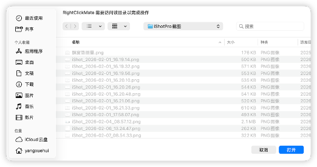
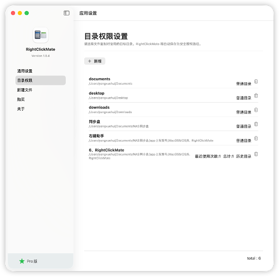

RightClickMate
App 预览
App Preview


Key Features
复制路径
一键复制文件路径，方便又快捷
Copy File Path
Instantly copy the full file path directly from Finder.
复制目录树
快速生成文件夹目录树结构，便于分享或文档使用。
Directory Tree Generator
Generate and copy clean directory tree structures for sharing or documentation.
打开终端
在选中的文件夹中一键打开终端。
Open in Terminal
Launch Terminal at the selected folder in one click.
批量调整图片尺寸
一键调整多个图片的尺寸。
Image Batch Resize
Quickly resize multiple images in one click.
批量文件重命名
从上下文菜单中高效处理多个文件重新进行命名。
Batch File Renaming
Efficiently rename multiple files from the context menu.
禅桌面模式
瞬间隐藏桌面杂乱，保持专注。
Clean Desktop Mode
Instantly hide desktop clutter and stay focused.
帮助与常见问题
Help & FAQ
RightClickMate介绍
RightClickMate — 让 Finder 右键更高效
RightClickMate 是一款专为 macOS Finder 打造的右键增强工具，让你在最熟悉的操作入口中，完成更多高频文件操作，无需切换应用，无需额外学习成本。
它专注于一个目标：让每一次右键，都更有价值。
适合人群
开发者 / 运维 / 技术人员、设计师 / 内容创作者、经常整理文件的办公用户、希望提升 Finder 使用效率的 macOS 用户
主要功能
- 快速新建文件
- 一键复制路径
- 在当前位置打开终端
- 批量修改文件名
- 批量调整图片尺寸
- 文件复制到指定目录
- 复制目录树
- 禅桌面（录屏 / 演讲模式）
通用权限
三个核心目录权限
这里对常用的三个目录进行授权，目的是为了获得这三个目录的访问权限。 在右键菜单中，“复制到”和“打开目录”，以及“复制目录树”，都会用到这个访问权限。 如果后续访问的目录超出了这三个目录的范围，app会弹出目录授权的对话框让用户进行授权，如下图：

授权后，app即可对该目录进行复制文件、打开、复制目录树等操作。
总结：以上三个目录是RightClickMate获得的一个初始权限集合，以便于用户可以正常使用RightClickMate的一些基础功能，例如“打开目录”、“复制（文件）到”菜单功能。
Finder扩展开关
- MacOS26+
- MacOS15+ 请见问题： 我找不到扩展开关，怎么办？
- MacOS14+ 待补充。
为了能够正常使用RightClickMate，还需要在系统设置中打开RightClickMate的Finder扩展开关。


目录权限

里面列出的都是可以出现在右键菜单“复制到”、“打开目录”中的目录清单，对于经常会用到的目录，可以手工在这里添加并赋权。新建文件
常见问题
1、我安装好了RightClickMate，但是在右键菜单看不到定制菜单的出现，怎么回事？
多数情况下，安装好了RightClickMate，右键菜单就可以出现了。如下图：

但是如果 macbook已经使用了一段较长时间没有重启了，那么确实有一定几率发生app右键自定义菜单不显示的情况。
请尝试以下步骤：
- 检查 Finder 扩展是否开启
- 刷新 Finder
- 重新启动 Mac
在终端执行命令（请复制以下命令，在Terminal 执行）
killall Finder
这个命令的作用是重启Finder，Finder会发现RightClickMate安装的插件，然后加载。
如果仍然不行，请重启 Mac。
2、我找不到扩展开关，怎么办？
MacOS在不同的版本，Finder扩展的开关界面不太一样。 在mac15.1的系统设置的确找不到RightClickMate的扩展开关，如果安装RightClickMate之后，在桌面上点击右键看不到新建、复制路径等自定义的菜单，那么请打开终端，按照顺序复制并运行以下两条命令：
- 重启Finder插件
- 重启访达
pluginkit -e use -i com.michaeldev.RightClickMate.MyFinderSyncExtension
killall Finder
这两条命令运行完毕后，在桌面上点击右键，应该就可以看到自定义的菜单出现了。
3、在批量修改文件名的时候，我想要替换字符，但是不想全部替换，怎么办？
答：使用替换的正则表达式来处理。
find pattern：^([^_]*)_
replace with ：$1.
意思是把文件名第一个出现的下划线，替换为.
About RightClickMate
RightClickMate — Make Finder Right-Click More Powerful
RightClickMate is a right-click enhancement tool designed specifically for macOS Finder. It allows you to perform more frequent file operations directly from the most familiar interaction point, without switching applications or learning new workflows.
It focuses on one goal: making every right-click more valuable.
Who Is It For
Developers / DevOps / Technical professionals, Designers / Content creators, Office users who frequently organize files, and macOS users who want to improve their Finder workflow efficiency.
Main Features
- Create new files quickly
- Copy file path with one click
- Open Terminal in the current directory
- Batch rename files
- Batch resize images
- Copy files to a specified directory
- Copy directory tree
- Zen Desktop (screen recording / presentation mode)
General Permissions
Three Core Directory Permissions
Here you grant access to three commonly used directories. The purpose is to allow the app to access these locations. Features such as “Copy To”, “Open Directory”, and “Copy Directory Tree” in the right-click menu require these permissions.
If you later access directories outside these three locations, the app will display a permission dialog asking you to authorize access to the new directory, as shown below:
After authorization, the app can copy files, open directories, and copy directory trees within that location.
In summary: these three directories serve as the initial permission set for RightClickMate, allowing users to use basic features such as “Open Directory” and “Copy (file) To”.
Finder Extension Switch
- macOS 26+
- macOS 15+ Please refer to the FAQ: “I cannot find the extension switch. What should I do?”
- macOS 14+ To be added.
To use RightClickMate properly, you also need to enable the Finder extension in System Settings.
Directory Permissions
Create New File
FAQ
1. I installed RightClickMate, but I cannot see the custom menu in the right-click menu. Why?
In most cases, the custom menu appears automatically after installing RightClickMate, as shown below:
However, if your Mac has been running for a long time without restarting, there is a small chance that the custom Finder menu will not appear.
Please try the following steps:
- Check whether the Finder extension is enabled
- Refresh Finder
- Restart your Mac
Run the following command in Terminal (copy and paste it into Terminal):
killall Finder
This command restarts Finder. Finder will then detect the RightClickMate extension and load it.
If it still does not work, please restart your Mac.
2. I cannot find the extension switch. What should I do?
The Finder extension settings interface differs across macOS versions.
In macOS 15.1, the RightClickMate extension switch may not appear in System Settings.
If you cannot see the custom menu (such as “New File” or “Copy Path”) after installing RightClickMate, please open Terminal and run the following commands in order:
- Restart the Finder extension
- Restart Finder
pluginkit -e use -i com.michaeldev.RightClickMate.MyFinderSyncExtension
killall Finder
After running these two commands, right-click on the desktop again and you should see the custom menu items.
3. When batch renaming files, I want to replace characters but not replace all occurrences. What should I do?
Use a regular expression replacement.
find pattern: ^([^_]*)_
replace with: $1.
This means replacing the first underscore in the filename with a dot.